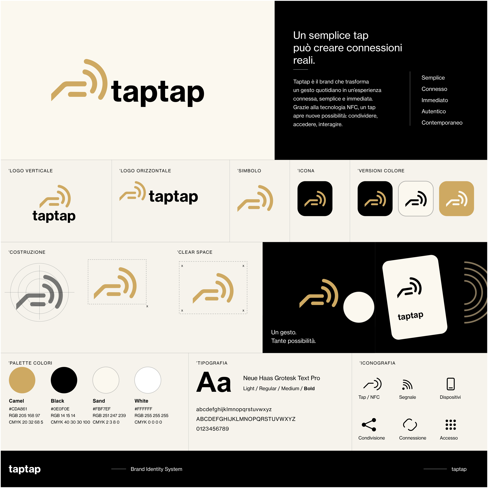
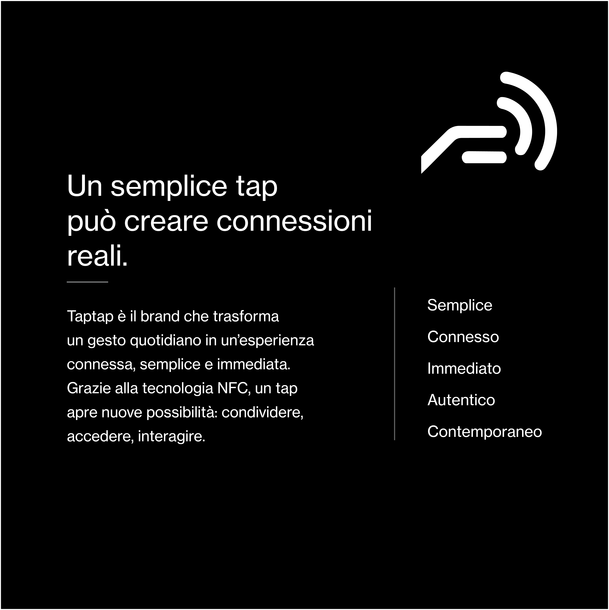
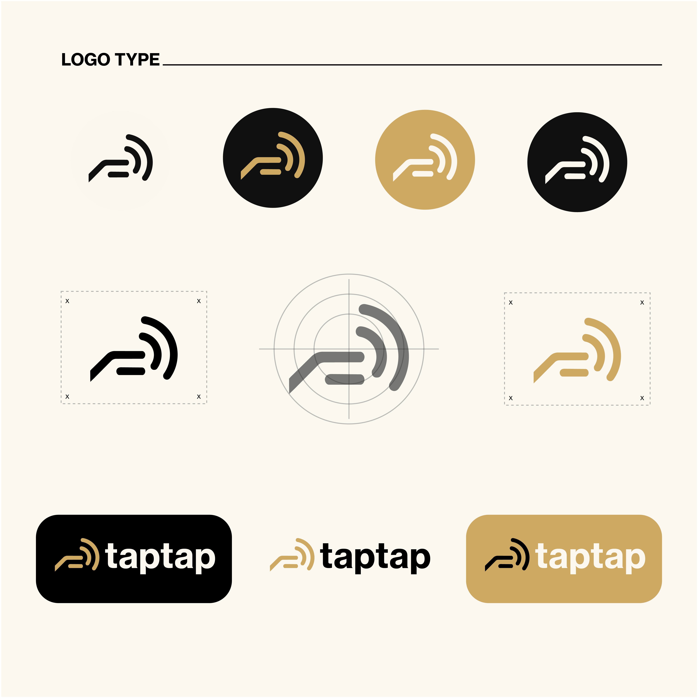
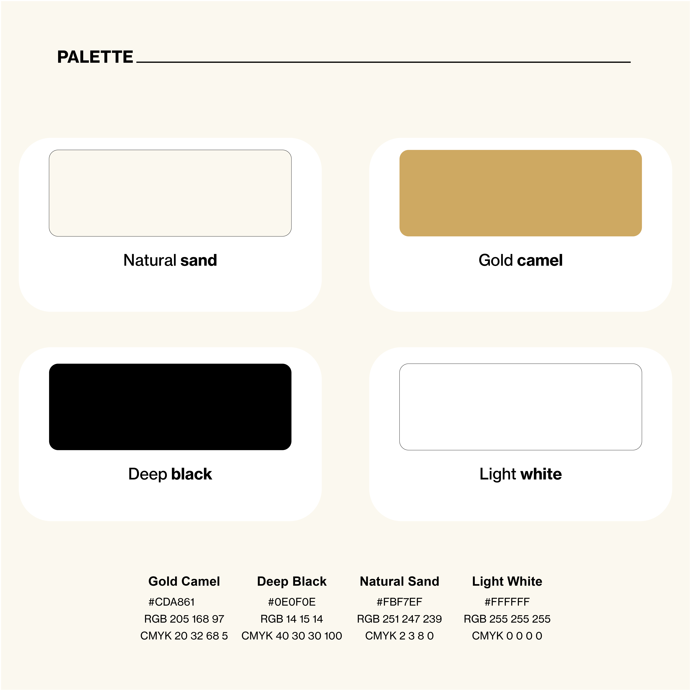
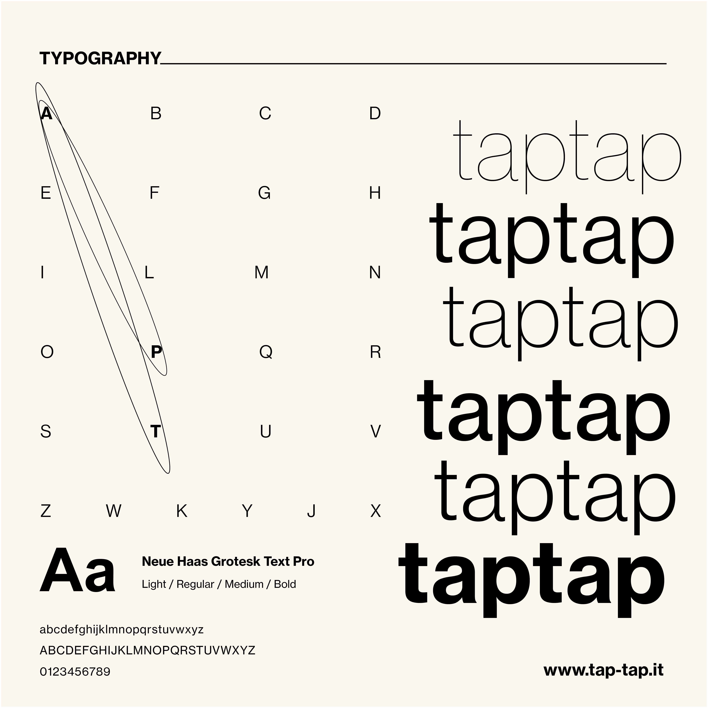

Un sistema completo di identità di brand per un ecosistema contactless basato sulla tecnologia NFC. Semplicità, connessione diretta ed estetica minimale uniscono le interazioni fisiche alle esperienze digitali.
Adobe Illustrator • Adobe Photoshop • Brand Guidelines System




